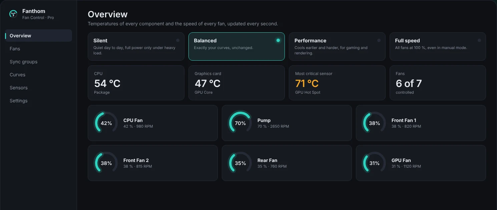
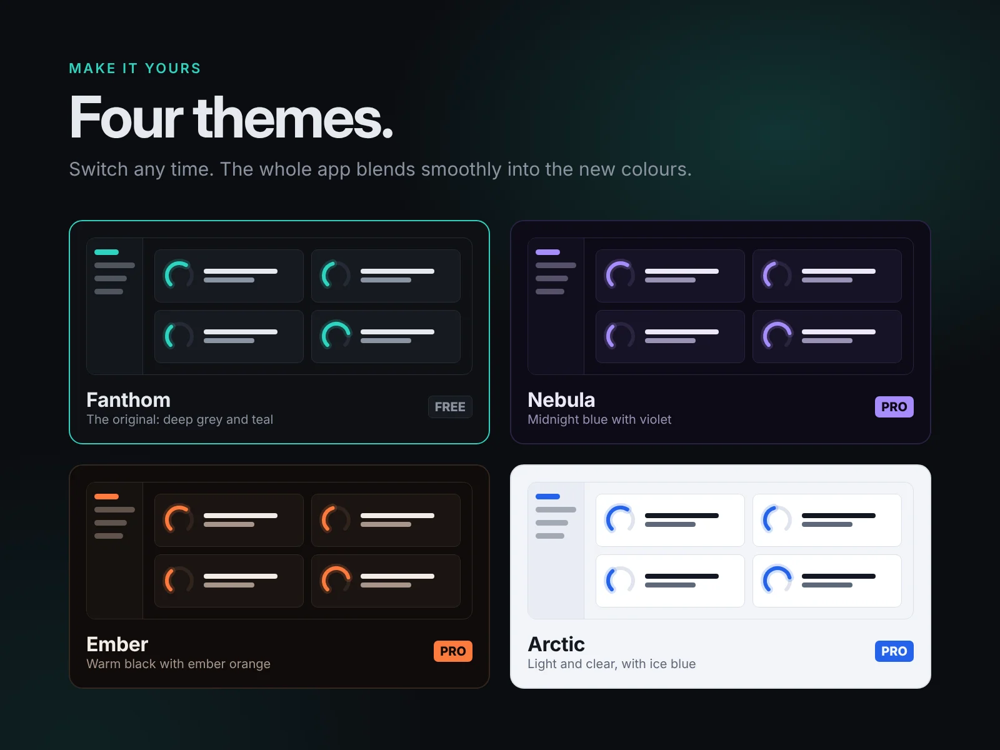

Quiet fans.
Full control.
Fanthom watches every temperature in your PC and drives every fan with your own curves. Silent when you work, full power when you game.
Windows 10 / 11 · 64-bit · No account, no telemetry

Everything your cooling needs. Nothing it doesn't.
A clean overview, smart curves and safety built in, in an app that looks good on your desktop.
Live overview
CPU, GPU, motherboard and every fan, updated every second, with the most critical sensor up front.
Your own fan curves
Drag points on a graph to decide exactly how fast each fan spins at each temperature.
One-click profiles
Silent, Balanced, Performance or Full speed, right from the tray icon without opening the window.
Failsafe built in
If CPU or GPU get too hot, every active fan goes to 100 %. On exit, control goes back to your BIOS.
Broad hardware support
Motherboard headers, NVIDIA and AMD graphics cards, AIOs and NZXT fan controllers.
Smooth and polished
Animated gauges, spinning fan icons at real speed, English and German interface.
Free to use. Pro when you want more.
The free version is not a trial. Pro is a one-time purchase that unlocks the advanced tools.
- Live temperatures and fan speeds
- Up to 3 fan curves (Flat, Linear, Graph)
- Silent, Balanced, Performance and Full speed profiles
- Failsafe protection and autostart
- Fanthom theme
- Everything in Free
- Trigger, Mix and Sync curves
- Unlimited fan curves
- Sync groups for fans in lockstep
- Custom sensors: mix, offset, time average, file
- Nebula, Ember and Arctic themes
Four themes. Switch any time.
The whole app blends smoothly into the new colours, from deep teal to a bright light theme.

FAQ
Is it safe to let software control my fans?
Fanthom never touches a fan you haven't enabled. A failsafe sets all active fans to 100 % if the CPU or GPU core gets too hot, and when Fanthom closes or runs into an error, control goes back to your BIOS. Still, check your temperatures under load after changing curves.
Why does Fanthom need administrator rights?
Reading motherboard sensors and setting fan speeds requires low-level hardware access, which Windows only allows with admin rights. Fanthom has no network features apart from the optional Pro license check.
Windows shows a warning when I start it. Why?
Fanthom is made by an independent developer and is not yet code-signed, so SmartScreen shows "unknown publisher". Click "More info" → "Run anyway".
Will it work with my hardware?
Fanthom uses LibreHardwareMonitor, which supports most motherboards from ASUS, MSI, Gigabyte, ASRock and others, NVIDIA and AMD graphics cards and many AIOs. NZXT fan controllers are supported directly. Try the free version first, it shows exactly which fans are controllable on your PC.
What do I need to install?
Windows 10 or 11 (64-bit) and the free .NET 10 Desktop Runtime. For motherboard sensors you also need the free PawnIO driver from pawnio.eu.
How does the Pro license work?
You get a license key by email right after purchase. Paste it in Fanthom under Settings → Fanthom Pro. One key works on up to 3 of your own PCs, and you can move it with "Deactivate on this PC".
Can I get a refund?
Purchases are handled by Lemon Squeezy, our reseller and merchant of record. Your statutory rights apply. For anything about your order, just contact us.